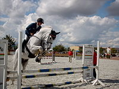

HOME
Meaning and usage
Etymology
The word "sport" comes from the Old French desport meaning "leisure", with the oldest
definition in English from around 1300 being "anything humans find amusing or entertaining".
Other meanings include gambling and events staged for the purpose of gambling;
hunting; and games and diversions, including ones that require
exercise. Roget's defines the noun sport as an "activity engaged in for relaxation
and amusement" with synonyms including diversion and recreation.
Nomenclature
The singular term "sport" is used in most English dialects
to describe the overall concept (e.g. "children taking part in sport")
, with "sports" used to describe multiple activities
(e.g. "football and rugby are the most popular sports in England").
American English uses "sports" for both terms.
Definition
The precise definition of what separates a sport from other
leisure activities varies between sources. The closest to an
international agreement on a definition is provided by SportAccord,
which is the association for all the largest international sports
federations (including association football, athletics, cycling,
tennis, equestrian sports, and more), and is therefore the de facto
representative of international sport.
SportAccord uses the following criteria, determining that a sport
should:
- have an element of competition
- be in no way harmful to any living creature
- ded by a single supplier
(excluding proprietary games such as arena football)
- not rely on any "luck" element specifically designed into the sport

They also recognise that sport can be primarily physical
(such as rugby or athletics), primarily mind
(such as chess or Go), predominantly motorised
(such as Formula 1 or powerboating), primarily co-ordination
(such as billiard sports), or primarily animal-supported
(such as equestrian sport).
The inclusion of mind sports within sport definitions has not been universally accepted, leading to legal challenges from governing bodies in regards to being denied funding available to sports. Whilst SportAccord recognises a small number of mind sports, it is not open to admitting any further mind sports.
There has been an increase in the application of the term "sport" to a wider set of non-physical challenges such as video games, also called esports, especially due to the large scale of participation and organised competition, but these are not widely recognised by mainstream sports organisations. According to Council of Europe, European Sports Charter, article 2.i, "'Sport' means all forms of physical activity which, through casual or organised participation, aim at expressing or improving physical fitness and mental well-being, forming social relationships or obtaining results in competition at all levels.